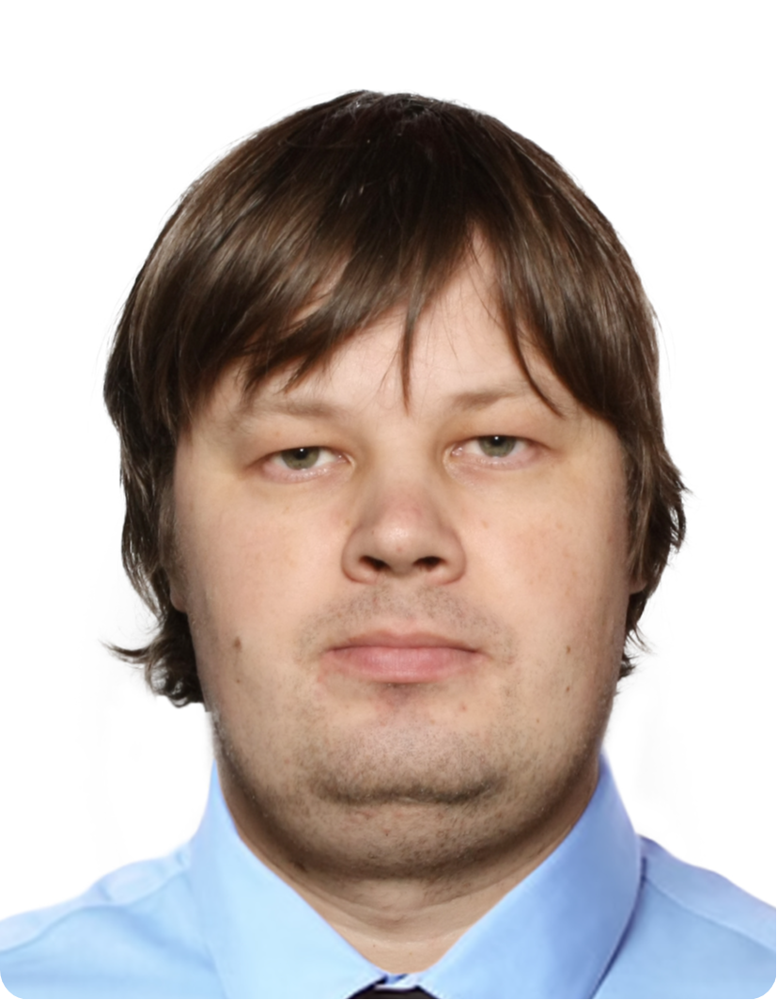

|
 |
Roman BessonovUniversity of LjubljanaFaculty of Mathematics and Physics Jadranska ulica 19 1000 Ljubljana, Slovenia Office: J21 104 roman.bessonov@fmf.uni-lj.si |
||||||||||||||||
I'm an associate professor at the University of Ljubljana, Slovenia. I'm interested in spectral and scattering theory, orthogonal polynomials,
complex analysis, Hankel and Toeplitz operators, and, more broadly, in the interplay of function and operator theories with applications in mathematical physics.
SeminarWith A. Kostenko and U. Jezernik, we are running the Spectral Theory Seminar at the University of Ljubljana and IMFM.News
Employment
Education
ProjectsJ1-70033 Random matrices, graphs, and groups (with U. Jezernik and A. Kostenko, 2026-2029).StudentsCurrent: Igor Sergeev, Anton KurdobloFormer: Pavel Gubkin (PhD), Stepan Konenkov (BSc), Peter Kulikov (BSc), Georgii Arhipov (BSc) I have research problems of various level. Interested students are welcome to write me a letter. PapersPreprints of my papers are avaliable on this ArXiv webpage. For published versions please visit my profile on MathSciNet. See also ORCID, Google Scholar or COBISS. Here are some selected papers:
Lecture notesHere is a collection of my lecture notes from St.Petersburg (2016-2023). Most of them are written by students following my presentation on the blackboard. Warm thanks to Mikhail Opanasenko, who organized exellent typesetting and proofreading work.
|
|||||||||||||||||
|
Last update: 22.03.2026 |
|||||||||||||||||